The Repositories page allows you to view and manage the Git repositories associated with your Orion account. When you visit this page you will see a list of all Git repositories you currently have cloned. Expand a repository to view the local and remote branches available in your clone. The currently checked out local branch is shown in bold.
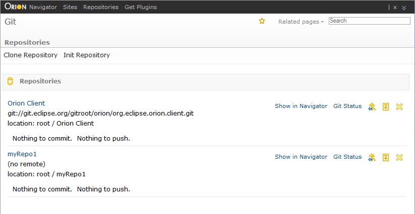
Create a new empty repository by clicking Init Repository on the tool bar, or click Clone Repository to clone an existing Git repository. Cloning will produce a dialog where you enter the Git repository URL, and optionally any credentials required to access or modify the repository.
You can delete an existing repository or navigate to the Navigator page. Hover over the repository name row in the repositories table to pop up actions as below.
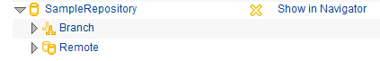
Clicking on the Delete action will pop up a confirmation dialog and you can decide if you want to delete it. Clicking on the Show in Navigator navigates to the Navigator page.
Once a repository is created or cloned, the master branch is set as the current branch. You can create your own branch, work on it and merge it back to master. Hover over the Branch row in the repository table to pop up the Add Branch action icon. Then hover over the action.
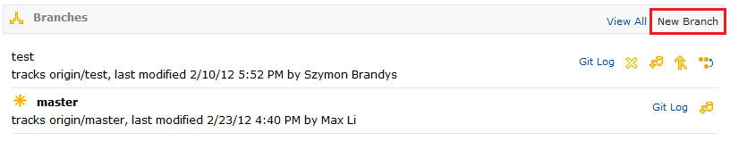
Clicking on the action and input the branch name. Hit enter key to create the branch.
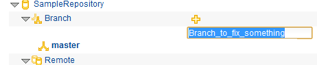
Once a new branch is created, it is in the local but not in the remote yet. Hover over the branch name row in the Branch table to pop up actions as below. You can manage the branch by these actions.
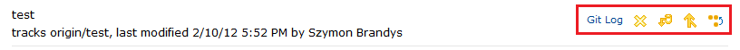
From the actions when you hover over the branch, click on the first action to delete the branch. A confirmation dialog will pop up and you can decide if you want to delete it.
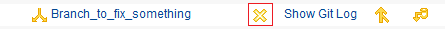
You can navigate to the Log page to see details on the branch. From the actions when you hover over the branch, click on the Show Git Log as the link to the Git log page.
You can also perform merge action if there is a remote tracking branch. But normally the remote branch does not exist yet for a newly created branch before you push it. From the actions when you hover over the branch, click on the third action to merge from the remote tracking branch.
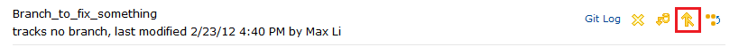
Please note that you can achieve the same result by performing the same action in Log page or Status page.
The newly created branch branch is not set as the current branch yet. Let's say you want to work on this branch now. From the actions when you hover over the branch, click on the last action to checkout the branch.
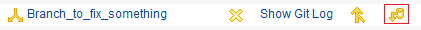
Once a branch is checked out, it is shown as bold. Please note that from now the Git Status page will show the content on this branch.
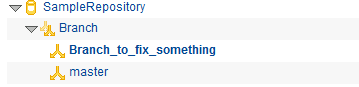
Once a branch is checked out, the actions change as below when you hover over the branch.
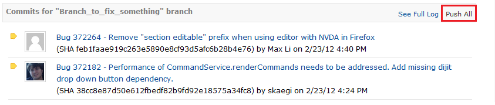
Clicking on the Push All action will create a remote tracking branch if there is not one yet.
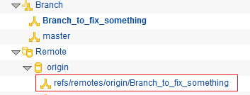
Please note that you can achieve the same result by performing the same action in Log page or Status page.
This document is maintained in a collaborative wiki. If you wish to update or modify this document please visit http://wiki.eclipse.org/Orion/Documentation/User_Guide/Reference/Repositories_page